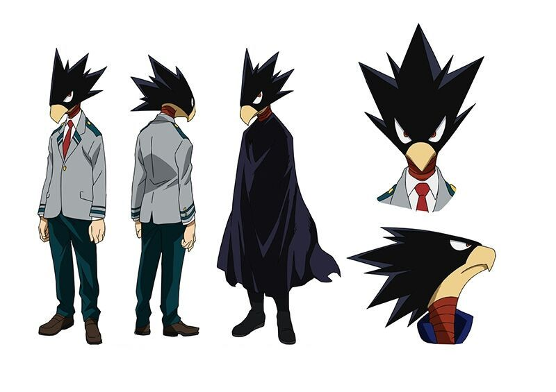

Фумикаге Токоями
Фумикаге Токоями
- Пол: ♂ Мужской
- Рост: 158 см.
- Возраст: 16
- Группа крови: AB
- Родился в: Японии
Фумикаге Токоями — студент класса 1-A в академии Юэй.
Внешность
Фумикаге относительно низкий персонаж с птичьей головой, острыми "волосами", коротким клювом и человеческими зубами. В остальном его тело ничем не отличается от человеческого.

В период обучения в младшей школе он носил японскую чёрную форму Гакуран с жёлтыми пуговицами. В Юэй он носит стандартную мужскую униформу: светло-серый пиджак поверх белой рубашки и тёмно-зелёные штаны, наряду с красным галстуком, который он не завязывает должным образом. Кроме того, Изуку всегда носит высокие красные ботинки с белой подошвой.
Его геройский костюм состоит из тёмной одежды и плаща, который полностью закрывает его тело. Под плащом он носит чёрную футболку и джинсы.
Личность
По натуре Фумикаге сдержанный, серьезный и сосредоточенный, напрямую игнорирует просьбы или вопросы, которые в некотором роде кажутся ему бессмысленными. Так или иначе, попав в команду Изуку, он постепенно меняется и становится более общительным.
Любит темноту и все, что с ней связано. Тем не менее смущается своих предпочтений и отказывается показать одноклассникам свою мрачную комнату.
Фумикаге знает свой предел и умеет вовремя отступать. Он принимает любые серьезные советы и использует их, чтобы усилить причуду и улучшить технику.
Причуда
 Тёмная тень - причуда Фумикаге. Его тело является вместилищем для теневого чудовища, которое он может материализовать. Фумикаге может использовать тёмную тень для ряда целей, таких как атака и защита. Эта тень разумная и имеет предел, после которого возвращается в тело владельца причуды. Негативные эмоции (сожаление, негодование) только усиливают тень, делая ее неуправляемой, и Фумикаге при этом теряет над ней контроль.
Тёмная тень - причуда Фумикаге. Его тело является вместилищем для теневого чудовища, которое он может материализовать. Фумикаге может использовать тёмную тень для ряда целей, таких как атака и защита. Эта тень разумная и имеет предел, после которого возвращается в тело владельца причуды. Негативные эмоции (сожаление, негодование) только усиливают тень, делая ее неуправляемой, и Фумикаге при этом теряет над ней контроль.
Сила и мощность темной тени зависит от отсутствия света поблизости. Днем тень слабее и ее проще контролировать, ночью сильнее, но контролировать ее труднее.